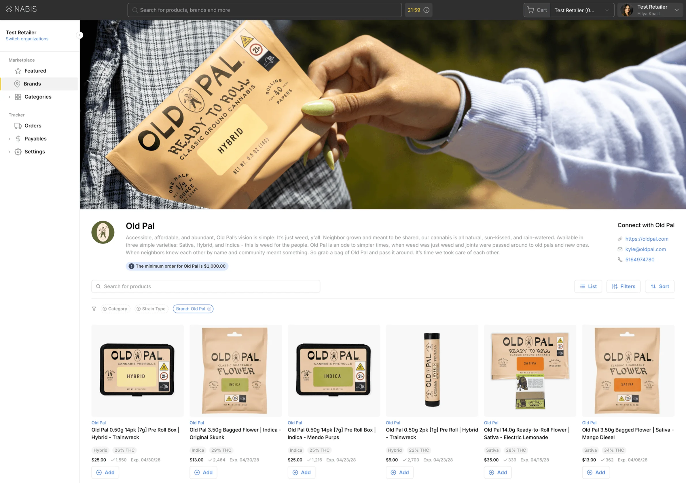
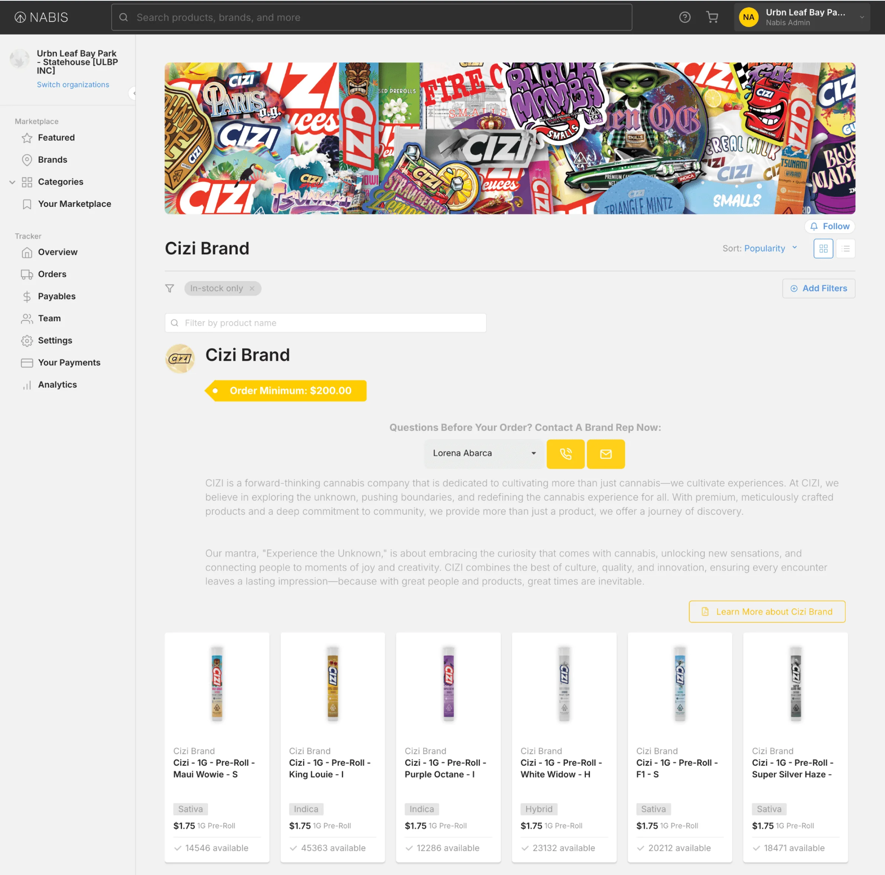
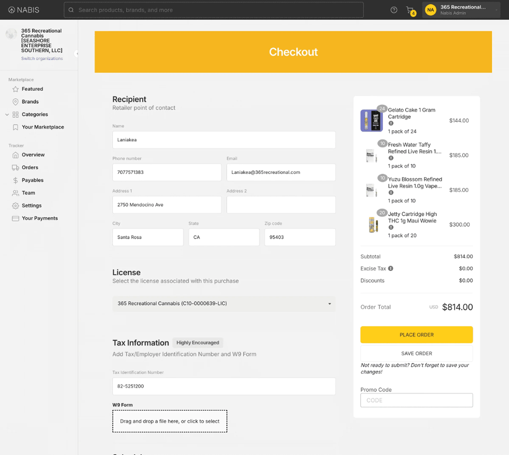
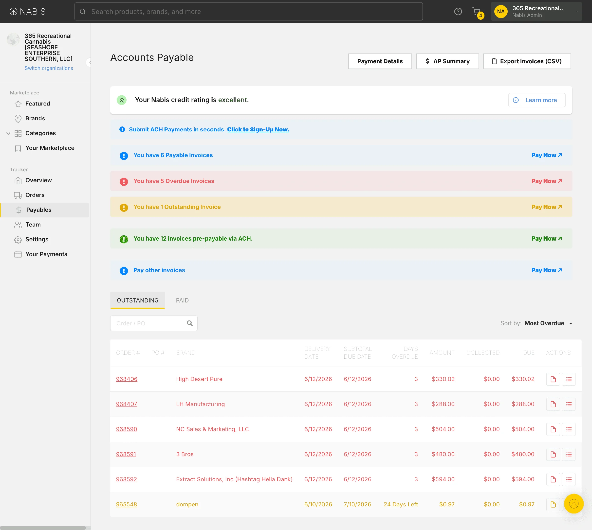
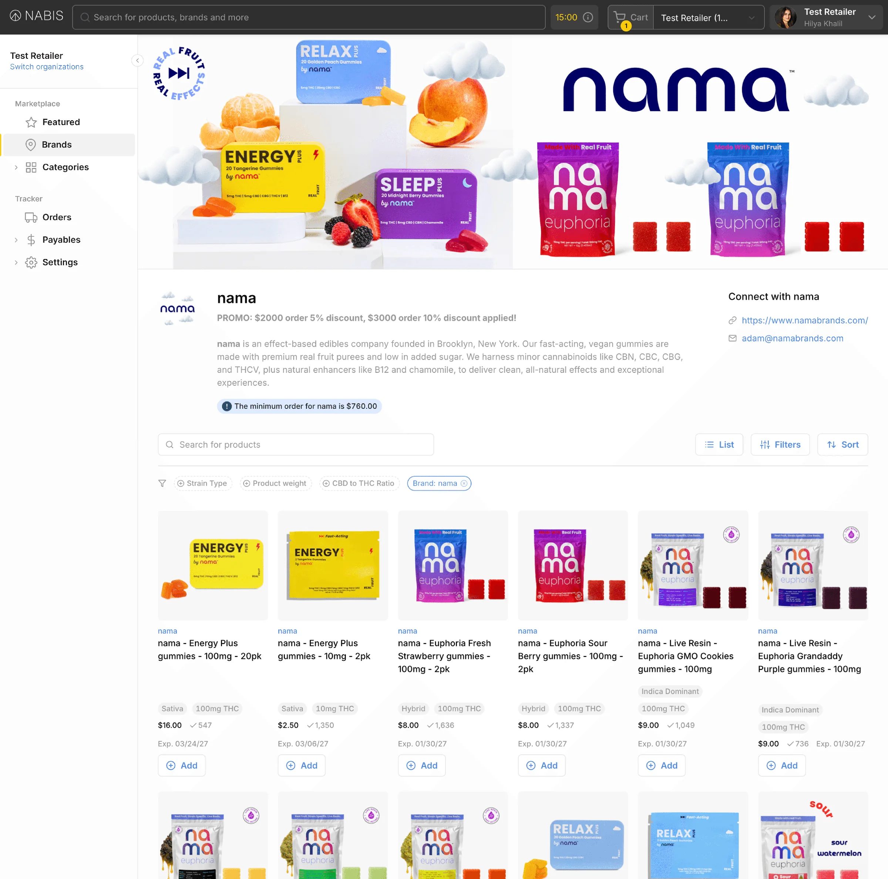
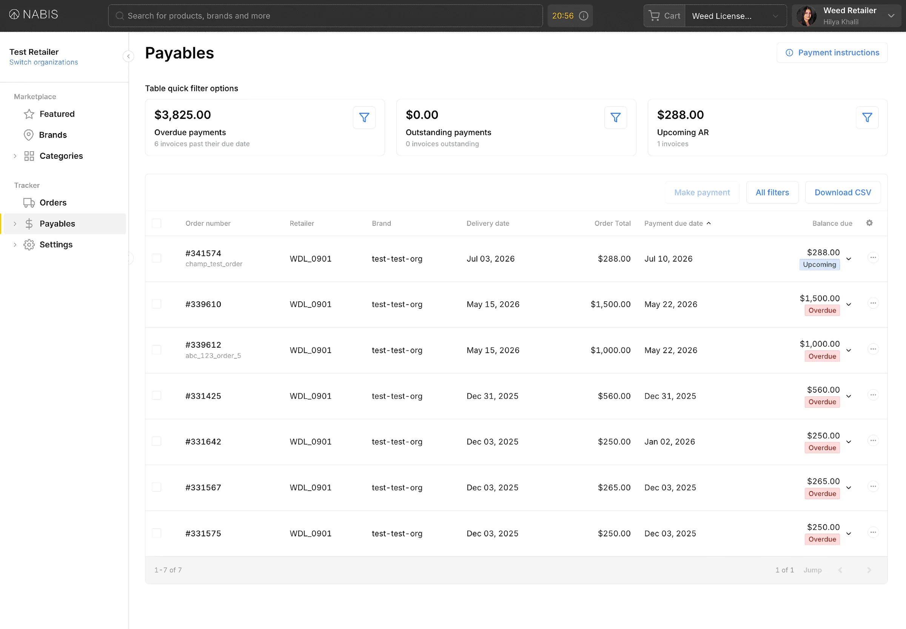
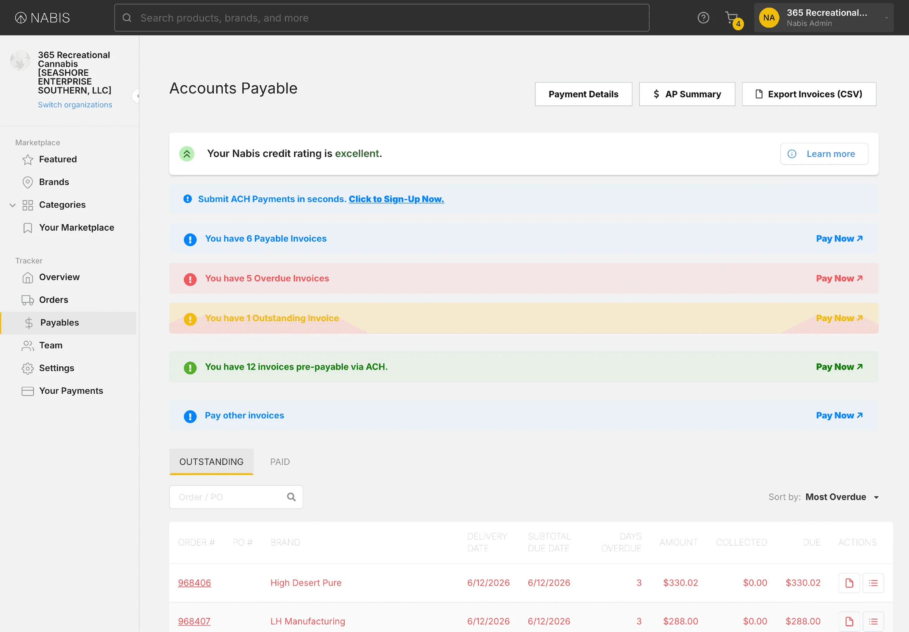
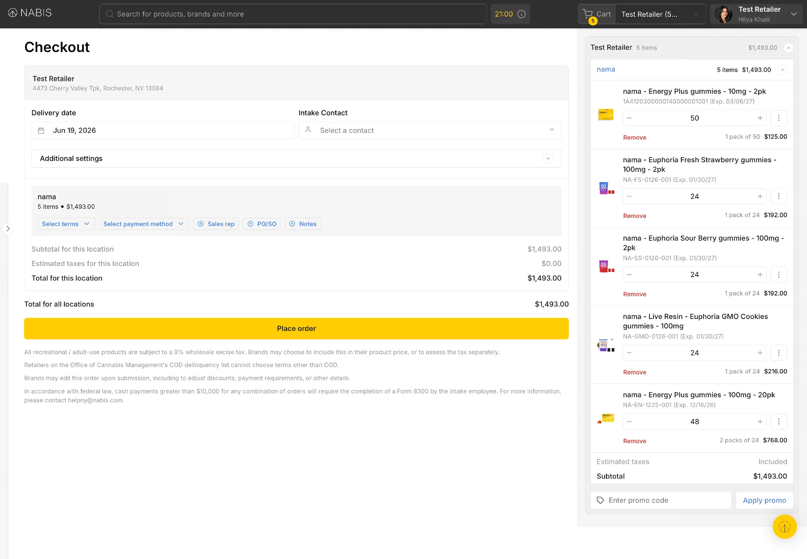
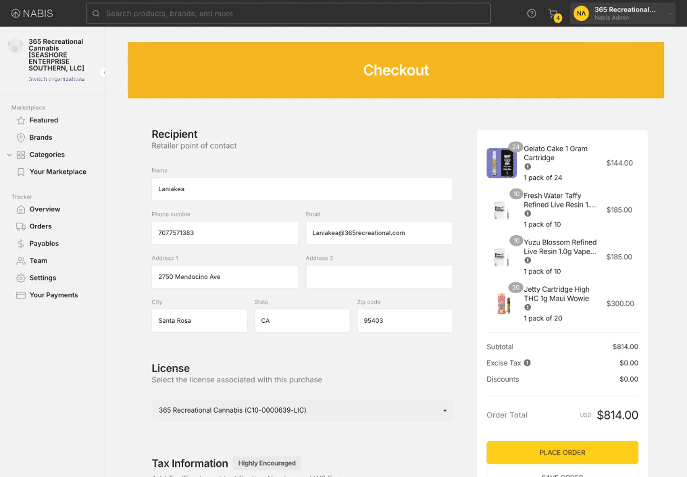

Marketplace renewed
Context
Nabis is a cannabis wholesale platform connecting Brands and Retailers. However, the platform’s existing Marketplace had accumulated years of technical debt that made it increasingly painful to use.
With an expansion into New York on the horizon, patching up the old system was no longer a viable path forward. This became our opportunity to rebuild the Marketplace from the ground up: faster, more accessible, and scalable.

Problem
Retailers were struggling to browse products, manage payments, and complete orders without running into dead ends. The experience was slow, unintuitive, and unreliable enough that it consistently prompted customers to raise issues. With New York expansion on the horizon, we couldn't afford to bring those same friction points into a brand-new market.
Business impact
Open the New York market with a platform retailers would actually want to use.
-
Replace legacy codebase with a scalable foundation built for growth
-
Reduce churn by making the experience worth coming back to
Audit
I audited our workflows through user interviews, NPS feedback, and Jira tickets and then ranked the pages on issues x impact.
-
Brand

Too many steps to find and add products, slowing down what should be a quick browsing session.
-
Checkout

A long, repetitive form created unnecessary drop-off at the most critical moment in the flow.
-
Payables

Too much information without hierarchy, making it hard to track and pay what they owe.
How can we reimagine the Marketplace experience so that retailers can complete their core workflows with confidence and ease
Solution
Open the New York market with a platform retailers would actually want to use.
Brand page

-
Quick add
One click to add products
-
Pinned filters
Saving filters reused
Payables page


Checkout page


Impact
After this to product I was able to collect data pieces from Retool dashboards and surveys.
- 13MNet growth merchandise value
- 45% — goal 20%Active retailer percentage
- 85.7% — goal 70%Brand adoption